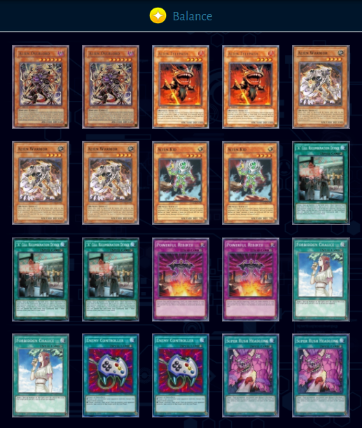

Aliens is a deck that uses A-Counters: These counters are used to activate card effects from monsters, traps and spells. Some Aliens are able to use A-counters to reduce enemy monsters attack and defense, and will have the text “If a monster with an A-Counter battles an Alien monster, it loses 300 ATK and DEF for each A-Counter during damage calculation only.”
This effect stacks for each Alien monster on the field. Aliens have been labeled as the best free-to-play and new player friendly deck in Duel Links with only one core Super Rare card. Alien decks are extremely versitile and have room for situational tech cards, making them a strong deck for experienced players as well.
